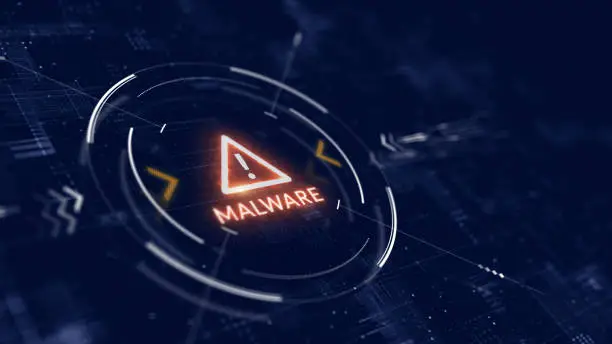
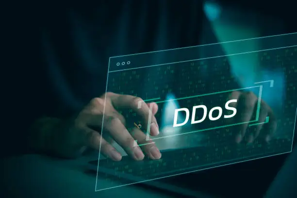

Conceptos clave
Concepto de Ciberseguridad
Según un artículo realizado por IBM en 2024, la ciberseguridad se refiere a todas las tecnologías, prácticas y políticas que son implementadas para prevenir los ciberataques o mitigar su impacto. Básicamente la ciberseguridad tiene como objetivo proteger los dispositivos, sistemas, redes, aplicaciones y datos vulnerables de las personas ante cualquier ciberamenaza que pueda enfrentar.
¿Por qué es importante? La ciberseguridad es importante ya que los ciberataques y la ciberdelincuencia tienen el poder de interrumpir, dañar o destruir empresas y vidas. Los ciberataques que tienen éxito conducen a robo de identidades, extorsión corporativa, pérdida de información confidencial, interrupciones temporales de la actividad, pérdida de negocios y clientes y, en algunos casos, cierres de empresas.
CIA
Principios fundamentales
Confidencialidad, Integridad y Disponibilidad (CIA) es un modelo base para el desarrollo de sistemas de seguridad que se utiliza para encontrar vulnerabilidades y crear soluciones, o evaluar lo que salió mal y lo que funcionó después de un incidente.
La confidencialidad implica esfuerzos para garantizar que los datos se mantengan privados y controlar el acceso a la información para evitar el intercambio no autorizado.
La integridad implica asegurarse de que los datos sean confiables y estén libres de alteraciones.

Y por último, la Disponibilidad vela para que los sistemas y redes estén disponibles para quienes corresponde, cuando corresponde.
Panorama de amenazas
Amenazas cibernéticas
Las amenazas cibernéticas son actividades o eventos que pueden causar daño a una red o sistema con fines maliciosos (robo de identidad, intrusión, hurto de información, etc.). Pueden afectar seriamente la reputación y continuidad del negocio.
Malware: Un malware es un software malicioso que puede lograr muchos objetivos en un sistema infectado. Algunos ejemplos comunes son: El caballo de troya, Virus, y en el que nos enfocamos aquí en SecLab, el Ransomware.
Ingeniería Social: Esta técnica utiliza trucos, coerción y otras formas de manipulación psicológica para lograr lo que el atacante quiere obtener. Algunas de las tácticas más comunes son; El phishing (cuando el atacante finge ser alguien de confianza, normalmente por correo electrónico), Smishing (usualmente finge ser parte del personal un servicio de paquetería por mensaje de texto), y el Vishing (este finge ser una empresa importante para obtener datos privados como contraseñas o números de tarjeta, por llamada).
Ataques a aplicaciones web: Las aplicaciones web son una parte importante de una organización para poder conectar con el público. Algunas de las vulnerabilidades más comunes son: Inyección SQL (SQL es un lenguaje utilizado para interactuar con bases de datos, utilizado maliciosamente puede mezclar datos e instrucciones), Ejecución remota de código(RCE permite a un atacante ejecutar un código malicioso en el sistema o red de una organización/empresa), Scripting entre sitios(XSS aprovecha la inyección, el control de acceso y otras vulnerabilidades para insertar scripts maliciosos).
Ataques DoS: Estos ataques están diseñados para interrumpir la denegación de un servicio. Los más comunes son; DDoS (cuando varios dispositivos envían muchas solicitudes a un servicio y lo saturan), RDoS (cuando el atacante pide una suma monetaria a cambio de NO realizar o detener un ataque DDoS)
MITM: Los ataques Man-in-the-Middle se enfocan en interceptar comunicaciones entre usuarios y terceros, los dos tipos más comunes son; Cuando el atacante intercepta el tráfico de origen y su destino (Spoofing), otro escenario se da cuando el atacante utiliza el navegador de un usuario para implantar un código malicioso y poder leer o modificar los datos antes de que lleguen al servidor o que el usuario pueda visualizarlos (Hijacking).
Defensas
Mecanismos y herramientas de protección
Hay herramientas que nos ayudan a solucionar muchos problemas cibernéticos de la actualidad, ayudando a usuarios, empresas y organizaciones a mantener sus archivos, datos personales y su identidad completamente segura. Algunas de estas herramientas son:
Firewalls: Los firewalls controlan el tráfico e inspeccionan paquetes que entran y salen de la red, por lo que actúan como los guardianes de esta.

Redes privadas virtuales: Las VPN crean a través del internet, una conexión la cual le permite al usuario estar seguro al navegar por internet, incluso en redes que no son seguras. Esta herramienta cifra los datos del usuario mientras pasan por el dispositivo y la red que esté en uso, haciendo ilegible la información para cualquier intercepte.

Sistemas de Detección de Intrusiones: Son herramientas de ciberseguridad las cuales supervisan el tráfico de red con el fin de poder identificar actividades sospechosas o infracciones a la política.
Software antivirus: Son fundamentales para la protección contra malware y sus diferentes tipos, analizando todos archivos o programas de un dispositivo en busca de rastros de malware o actividades sospechosas y al detectar algún problema lo envía directamente a una cuarentena o lo elimina automáticamente
Buenas prácticas
Seguridad en redes y Sistemas Operativos
La seguridad en redes y sistemas operativos se refiere a buenas prácticas, técnicas y soluciones para riesgos cibernéticos. Día con día la tecnología avanza y evoluciona, esto implica que los ataques cibernéticos incrementen, existe una gran cantidad de prácticas de seguridad para seguir e implementar en empresas y incluso en la cotidianidad:

Segmentación de la red de práctica: Es una técnica que divide la red en segmentos más pequeños haciendo que le sea más sencillo al usuario mantener el control de su red y sus datos, reduce las maneras en las que el hacker puede obtener acceso no autorizado, lo cual un camino más factible para mantener una red organizada y fuera de peligro.
Autenticación multifactor: El uso de la MFA comprueba la identidad del usuario, ya que requiere dos formas de identificación única como reconocimiento facial, contraseñas o huella dactilar. Muchos dispositivos por sí solos requieren el uso de algún tipo de reconocimiento de identidad, sin embargo para la seguridad en redes es fundamental añadir una línea de seguridad adicional en caso de que alguien intente obtener acceso a datos privados.
Redes privadas virtuales: Las VPN, al ser un servicio que ofrece cifrado de datos e información a través del internet, fija conexiones seguras que hacen que se complique rastrear la actividad de un usuario o empresa. Conforme la tecnología avanza los VPN se vuelven más importantes para la evolución de empresas, organizaciones y lugares públicos que impliquen o brinden el servicio de conectarse a una red.